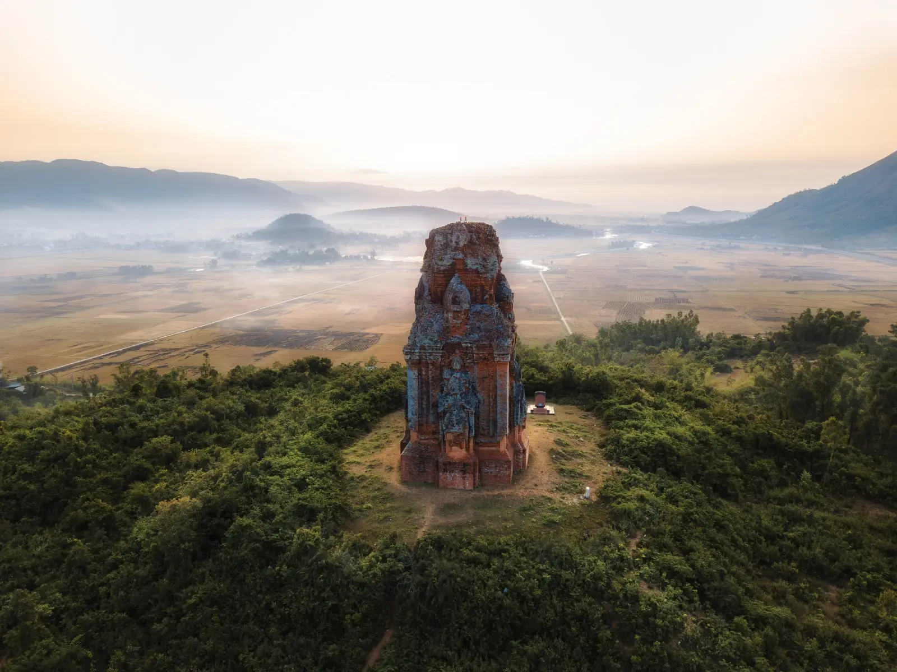
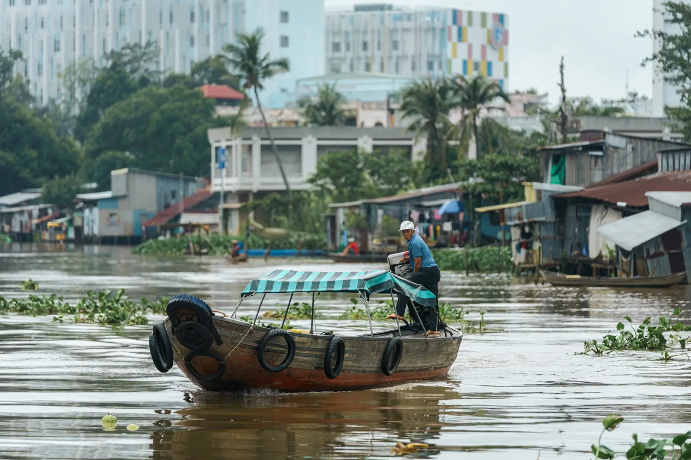
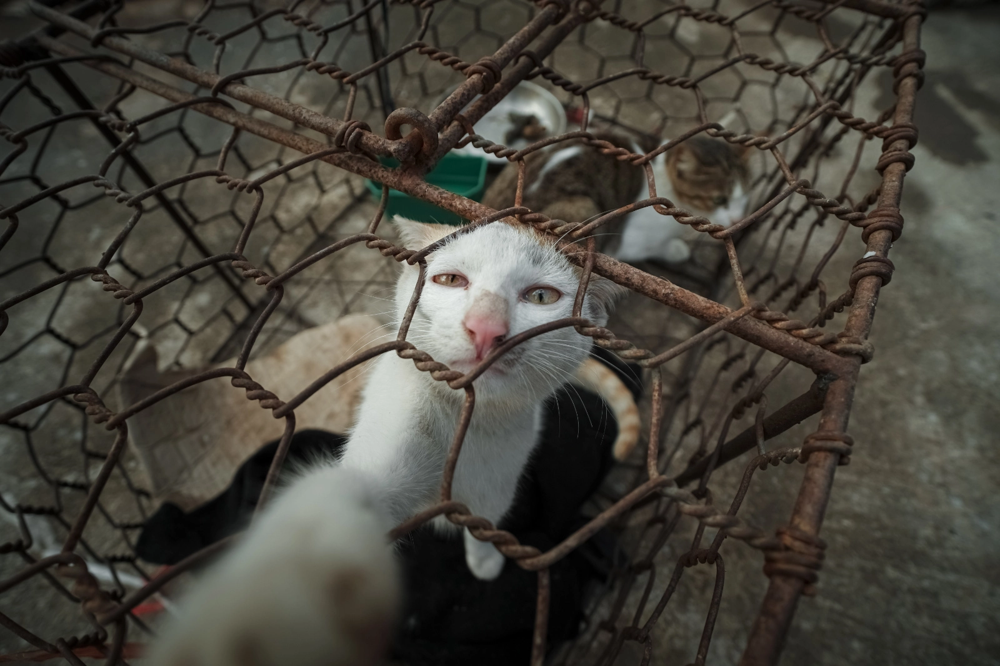

Published & Featured

The Moment of Possession
At ancient Cham temple sites across central Vietnam, the search for a lost civilization gives way to something more complicated — a culture still practiced, prayed to, and passed down today.
Read more...
Dead in the Water? The Hunt for Vietnam's Last Floating Market
A journey through Vietnam's Mekong Delta in search of Long Xuyên's floating market, and a look at what stands to disappear along with it.
Read more...An Unspoiled Haven for Digital Nomads Still Exists — For Now
As Da Nang emerges as one of Asia's fastest-growing hubs for remote workers, the city faces a familiar tension between welcoming newcomers and protecting what drew them there in the first place.
Read more...My City Was Filling Up With Digital Nomads, So I Converted My Family Home Into a Business
An as-told-to account from Hana Nguyen, who turned her family's Da Nang home into a coworking space as the city's population of remote workers grew.
Read more...Tourism Is Breaking Records in Vietnam. Is That All It's Breaking?
With travel numbers climbing to new highs, 2025 is on track to be a record year for Vietnam's tourism industry. In Hội An, the piece asks whether anything will be done to protect local communities from the strain of overtourism — or whether the economic rewards are simply too tempting to pass up.
Read more...
For the First Time FOUR PAWS Closes a Cat Meat Restaurant and Slaughterhouse in Vietnam
In December 2020, FOUR PAWS shut down a cat meat restaurant and slaughterhouse in Thai Binh — the first closure of its kind in Vietnam — rescuing 25 animals, including five dogs, who had been awaiting slaughter.
Read more...[Photos] Saigoneer's Best Original Photography of 2018
A year-end roundup of Saigoneer's strongest original photography from 2018 — spanning brick factories and an abandoned water park in Hanoi to mud wrestling and spearfishing further afield, including a shot from the Bắc Giang mudball festival.
Read more...In Bắc Giang, 'Mudball' Is a Centuries-Old Festive Sport
Held once every four years in Vân Village, this centuries-old mud wrestling festival remains one of the most striking traditions still practiced in Vietnam today.
Read more...